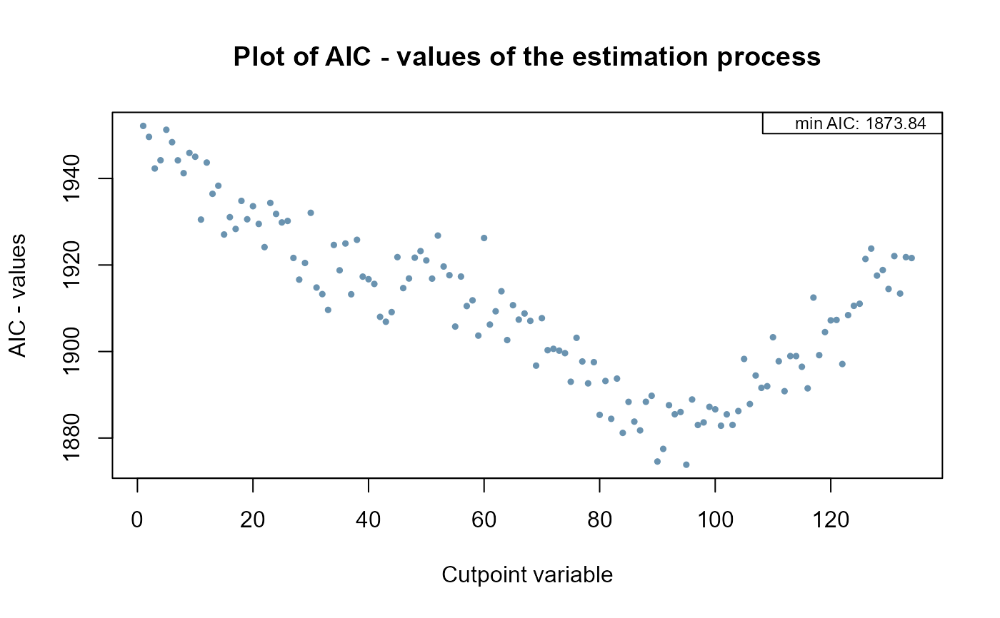
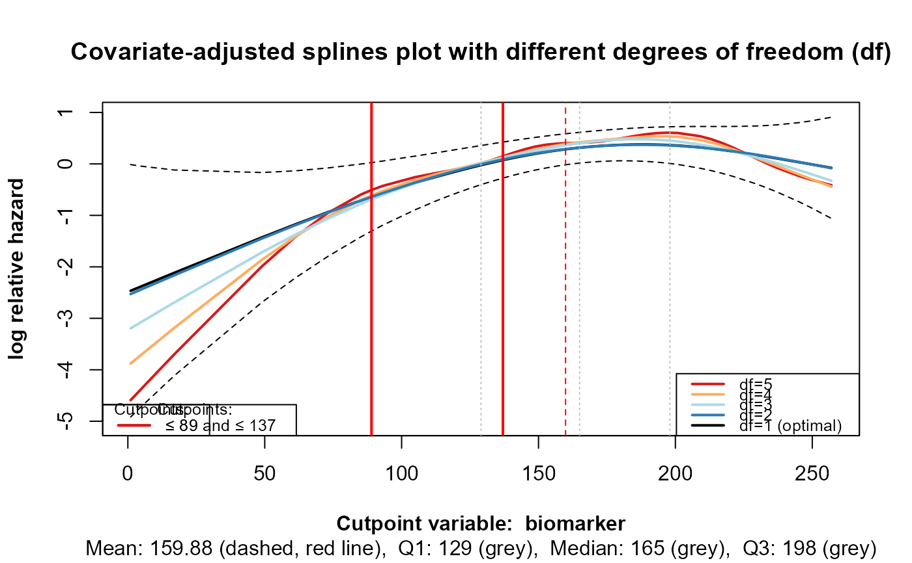

Create a plot of AIC or Likelihood ratio test statistic values for the estimation procedure. If there are two cutpoints, a Contour-plot and an Index-plot can be generated.
cp_value_plot(
cpobj,
plotvalues = "AIC",
dp.plot = 2,
show_limit = TRUE,
plottype2cp = "contour"
)list, contains a vector of AIC values (AIC_values) and Likelihood ratio test statistic values (LRT_values) of the estimating procedure
character, either AIC or LRT. Either the AIC or
LRT values are displayed. Default is AIC.
numeric, digits for the AIC values and LRT values.
Default is 2.
logical, if TRUE the minimum AIC value is shown in the
plot if plotvalues = "AIC", and the maximum LRT value is shown if
plotvalues = "LRT"
character, either contour or index. Default is
contour. This option is available only when searching for two cutpoints.
Index plots and contour plots can be selected. Index plots display all AIC
or LRT values from the estimation process as a scatter plot. Contour plots
are shown in the RStudio viewer and illustrate the two potential cutpoints
along with the corresponding AIC or LRT values. Index plots that do not
show extreme values suggest that there may not be any actual cutpoints in
the data. Contour plots provide an opportunity to explore whether there
might be other potential cutpoints with similar AIC or LRT values. The
smaller the bandwidth (minimum group size per group), the more precise
and meaningful the contour plots can be interpreted.
Plots the AIC- or LRT-values, derived from the estimation procedure.
cp_est() for main function of the package, cp_splines_plot()
for penalized spline plots
# Example 1
# Plot AIC-values and potential cutpoints of the estimation process
# Create AIC values:
AIC_values <- c(1950:1910, 1910:1920, 1920:1880, 1880:1920)
AIC_values <- round(AIC_values + rnorm(length(AIC_values),
mean = 0, sd = 5), digits = 2)
# Create a cutpoint variable:
cpvariable_values <- matrix(NA, nrow = length(AIC_values), ncol = 2)
cpvariable_values[ ,1] <- c(1:length(AIC_values))
# Create a cutpoint object (cpobj):
cpobj <- list(AIC_values = AIC_values,
nb_of_cp = 1,
cpvariable_values = cpvariable_values,
cpvarname = "Cutpoint variable"
)
cp_value_plot(cpobj, plotvalues = "AIC", dp.plot = 2, show_limit = TRUE)

# Example 2
# Splines plot based on data1
# The data set data1 is included in this package
cpobj <- cp_est(
cpvarname = "biomarker",
covariates = c("covariate_1", "covariate_2"),
data = data1,
nb_of_cp = 2,
plot_splines = TRUE,
)
#>
#> Approx. remaining time for estimation: 7 seconds
#> --------------------------------------------------------------------
#> SETTINGS:
#> Cutpoint-variable = biomarker
#> Number of cutpoints (nb_of_cp) = 2
#> Min. group size in % (bandwith) = 0.1
#> Estimation type (est_type) = AIC
#> CP-variable as strata (cpvar_strata) = FALSE
#> Symmetric tails (symtails) = FALSE (is set to FALSE if nb_of_cp = 1)
#> Cutpoints for u-shape (ushape) = FALSE (is set to FALSE if nb_of_cp = 1)
#> --------------------------------------------------------------------
#> Covariates or factors are:
#> covariate_1 covariate_2
#> --------------------------------------------------------------------
#> Minimum group size is 10 (10% of sample size in original dataset, N = 100)
#> --------------------------------------------------------------------
#> Number of cutpoints searching for: 2
#> 1.Cutpoint: biomarker ≤ 89
#> 2.Cutpoint: biomarker ≤ 137
#> -----------------------------------------------------------------
#> Group size in relation to valid data of biomarker in original data set
#> Total: N = 100 (100%)
#> Group A: n = 12 (12%)
#> Group B: n = 17 (17%)
#> Group C: n = 71 (71%)

# Example 3
# Contour plot based on data1
# The data set data1 is included in this package
cpobj <- cp_est(
cpvarname = "biomarker",
covariates = c("covariate_1", "covariate_2"),
data = data1,
nb_of_cp = 2,
plot_splines = FALSE,
)
#>
#> Approx. remaining time for estimation: 6 seconds
#> --------------------------------------------------------------------
#> SETTINGS:
#> Cutpoint-variable = biomarker
#> Number of cutpoints (nb_of_cp) = 2
#> Min. group size in % (bandwith) = 0.1
#> Estimation type (est_type) = AIC
#> CP-variable as strata (cpvar_strata) = FALSE
#> Symmetric tails (symtails) = FALSE (is set to FALSE if nb_of_cp = 1)
#> Cutpoints for u-shape (ushape) = FALSE (is set to FALSE if nb_of_cp = 1)
#> --------------------------------------------------------------------
#> Covariates or factors are:
#> covariate_1 covariate_2
#> --------------------------------------------------------------------
#> Minimum group size is 10 (10% of sample size in original dataset, N = 100)
#> --------------------------------------------------------------------
#> Number of cutpoints searching for: 2
#> 1.Cutpoint: biomarker ≤ 89
#> 2.Cutpoint: biomarker ≤ 137
#> -----------------------------------------------------------------
#> Group size in relation to valid data of biomarker in original data set
#> Total: N = 100 (100%)
#> Group A: n = 12 (12%)
#> Group B: n = 17 (17%)
#> Group C: n = 71 (71%)
cp_value_plot(cpobj, plotvalues = "AIC", plottype2cp = "contour")